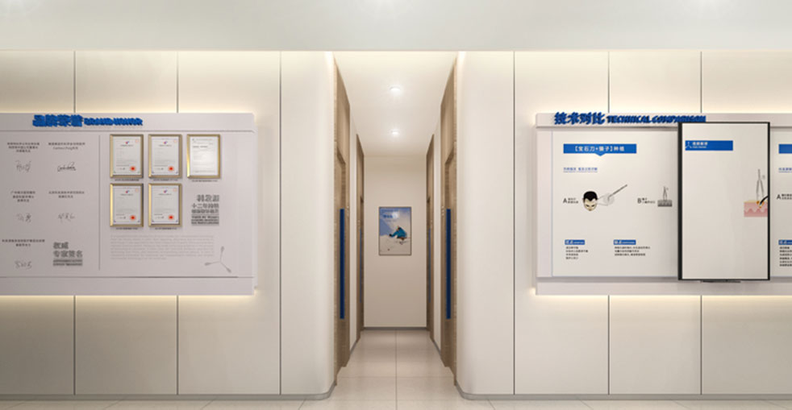

Compare the problem with our permanent solution
Eyebrow transplant uses your own living hair follicles for permanent, natural results.
Sparse, thin, or missing eyebrows can affect your confidence and daily routine.
Check if eyebrow transplant is right for you
Years of tweezing, waxing, or threading have damaged your follicles beyond natural repair.
Accidents, burns, or surgery have left scars in your brow area that need coverage.
You were born with thin, patchy, or barely-visible eyebrows and want fuller definition.
Alopecia, thyroid disorders, or chemotherapy have caused partial or complete brow loss.
Choose the perfect brow shape for your face
A soft, gentle arch that follows your natural brow bone. The most universally flattering shape that suits most face shapes and ages.
A modern, straight brow design popular in contemporary beauty trends that creates a youthful, approachable appearance.
A more pronounced arch that creates a lifted, elegant look. Ideal for patients wanting a bold, well-defined brow shape.
A fully personalized brow shape designed specifically for your facial proportions, ethnic background, and personal aesthetic preferences.
Understanding your graft requirements and estimated costs
Depending on the extent of hair loss and your desired fullness. Your surgeon will provide an exact estimate during consultation.
Complete bilateral restoration. The procedure is completed in a single 3-5 hour session under local anesthesia.
Depending on the size of the scarred area. Slightly higher graft counts are typically used to account for lower survival rates in scar tissue.
Some patients opt for a second session 8-12 months later to add extra density and achieve their desired fullness.
Where surgical precision meets artistic vision
Before surgery begins, our surgeon draws your new eyebrow shape directly on your face using a surgical marker. We work closely with you to achieve the ideal shape, thickness, and arch that complements your unique facial features. Your input is essential — we refine the design together until you are completely satisfied with the planned result.
Eyebrow restoration exclusively uses single-hair grafts for the most natural appearance. Our technicians carefully select the finest, most delicate follicles from your donor area, as these produce the softest, most natural-looking eyebrow hairs.
Using our finest microneedle instruments, each graft is placed at the exact angle and direction of natural eyebrow growth. The front portion of the brow grows upward and outward, the middle section lies flatter, and the tail angles downward. This multi-directional approach is what creates truly authentic-looking eyebrows.
We create a natural gradient density — fuller in the body of the brow and gradually softer toward the front and tail. This graduated look is characteristic of natural eyebrows and avoids the artificial "solid block" appearance that less experienced clinics produce.
Trusted by patients from over 30 countries worldwide
Our surgeons combine medical precision with an artistic eye, creating eyebrow shapes that enhance your unique facial features and look completely natural — never overdone or artificial.
Our ultra-fine microneedle instruments enable the most precise graft placement available, creating natural-looking brows with minimal tissue trauma and faster recovery.
Our dedicated international patient coordinators communicate in fluent English, ensuring a smooth and comfortable experience from consultation through full recovery.
Custom-designed eyebrow transplant using advanced FUE technology for natural, lasting results

Your eyebrows frame your face and define your expressions. If years of over-plucking, genetics, or medical conditions have left your brows thin or patchy, our eyebrow transplant can restore the full, natural-looking brows you deserve. Using your own healthy hair follicles, we create permanent results that no makeup, pencil, or tattoo can replicate.
Perfectly shaped for your face
Your real hair — for life
0.6mm micro-precision technology
Real hair that grows naturally
From consultation to your new permanent eyebrows
Draw and refine your ideal eyebrow shape on your face
Extract finest single-hair grafts from back of scalp
Select and prepare the most delicate follicles for brow use
Insert each graft at exact natural eyebrow growth angle
Ensure both brows are perfectly balanced and symmetrical
Recovery guidance and 12-month growth monitoring
What makes our eyebrow restoration the preferred choice
Creating beautiful eyebrows is as much art as it is science. Our surgeons spend significant time during consultation designing a brow shape that perfectly complements your face shape, eye shape, bone structure, and ethnic characteristics. We adjust, refine, and perfect the design until it is exactly what you want.
Natural eyebrows do not grow in a single direction. The hairs at the front point upward, the middle section lies flat, and the tail angles downward. Our surgeons replicate this complex multi-directional pattern with surgical precision, creating brows that look authentically natural from every angle.
Because the transplanted hair is your own real hair, you can trim it, shape it with a spoolie, and style it just like natural eyebrow hair. The hair will grow at a similar rate to scalp hair, so occasional trimming is needed — but this also means your brows will never fade or disappear like tattooed brows do.
Industry leader in eyebrow restoration with proven results
Pioneer and industry leader in microneedle hair transplant technology since 2006
Located in major cities worldwide, all maintained to the same rigorous standards
Proprietary microneedle and implant pen systems delivering consistently superior results
Trusted by patients from around the globe for consistently remarkable results
Comprehensive English support for international patients from inquiry through recovery
State-of-the-art facilities and strict safety protocols for your peace of mind
See the remarkable eyebrow transformations our patients have achieved


Moments captured with our happy eyebrow transplant patients

Posing with our medical team after successful procedure

Celebrating fantastic results with our doctors

Another satisfied patient shares their joy

Patient with our specialist before discharge

Happy patient with Dr. Chen post-treatment

Excited patient showing their new look

Patient delighted with their transformation

Patient starting fresh with amazing results
Real stories from real patients who trusted us with their eyebrow restoration
I basically had no eyebrows left after years of over-tweezing in my 20s followed by pregnancy shedding. The tail of my brow was completely gone and the middle third was so sparse I drew them in every single morning. Barley took fine single hairs from the nape and behind my ear — 260 hairs per side. The angle thing was everything: the head of the brow grows almost vertical, the middle sweeps 45 degrees, and the tail runs almost horizontal. They nailed every zone. At 9 months I don't own a brow pencil anymore.
I'm a guy in my late 30s and my brows were getting so sparse you could see skin through them, especially at the outer ends. I didn't want that Instagram sharp square brow look, I wanted a natural, un-done masculine shape. The surgeon drew a soft, gently arched brow with a thicker body and a slow taper — nothing dramatic. 230 grafts per brow, all single hairs, taken from the lower nape so the calibre matches. Now at 11 months no one has a clue. My sister just said my face looks "less tired". Exactly what I wanted.
Did microblading three times and hated every single result. The strokes blurred, the colour turned warm and orange, and every six months I looked patchy again. Plus I was sick of the "drawn-on" look that never moves with your real skin. Barley's eyebrow transplant was a complete 180. The direction of each hair follows the exact fan shape that real brows have — inner brow points up, middle out, tail down. You can push them around with a spoolie and they fall back naturally. Microblading is flat; this is three-dimensional, living hair.
Everyone asks me when you can start wearing makeup after. For me, light concealer and eyeshadow away from the brow line was fine after day 7, but I waited a full 30 days before I touched the actual brows with any pencil or powder, and 6 full months before I did any new PMU or tinting. And honestly, by month 6 I didn't even need makeup anymore — they were already thick enough. The transplanted hairs do grow a bit faster than natural brows, so I snip the ends with little brow scissors every 10 days. Super low maintenance compared to what I was doing before.
One question I had before surgery: is the donor area behind the ear going to show a bald spot? I was so worried, because I wear my hair up in ponytails most days. The answer is no — they take individual fine hairs spread across a wide strip behind the ear and upper nape, so the donor density drops from like 120 FU per sq cm to 110. No visible gap at all. Even my hairdresser couldn't find where they harvested. And the fine soft hair from that area is way better for brows than thick scalp hair. It lies flat and doesn't stick up.
I was born with basically no eyebrows — like, blonde vellus fuzz that you could only see from 10cm away. I literally have never in my 29 years had real brow hair. Barley put 310 grafts per side and the results at 10 months have changed my face shape completely. Because I had zero existing brow, the surgeon designed the arch height specifically for my high forehead and heart-shaped face. My only regret is that my foundation and concealer used to cover the nothing-brows perfectly, and now on day 2 after a tint, I have to actually remove my eye makeup properly. Worth it a million times.
Experience our modern and comfortable facilities
Our state-of-the-art facility

Relax in our premium lounge

Sterile and advanced

Private and professional

Comfortable post-op space

Welcoming entrance
Answers to the questions our patients ask most often
Click to copy contact information
15810155700
+86 13730143529
hairtransplant@qq.com

Everyone's hair loss journey and solution are unique due to a variety of factors. Our hair restoration experts will assist you in determining the root cause and the best solution for your hair restoration plan. If you have any questions, please ask; we are happy to assist.